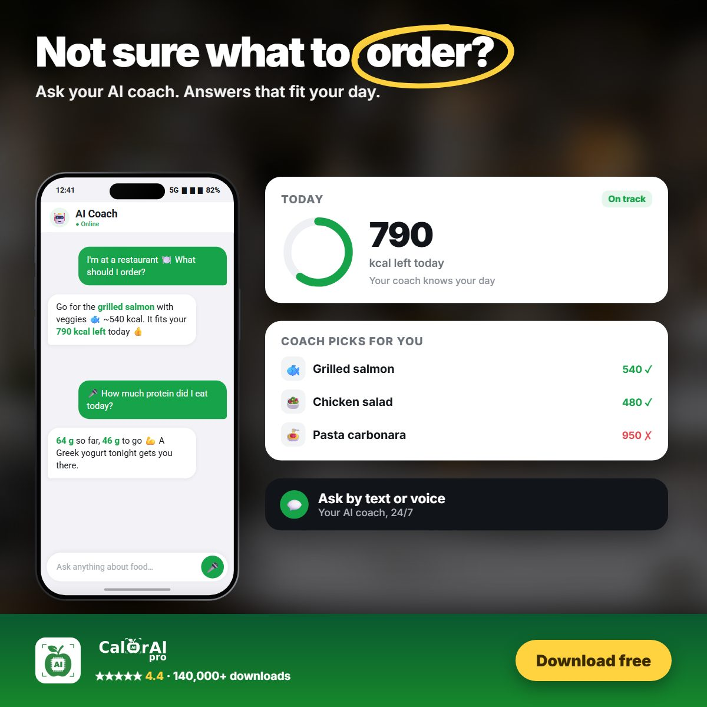

For people with food allergies, coeliac disease or intolerances, every meal comes with a question: is there something in this I can't eat? Labels help with packaged food, but restaurant meals, takeaways and dishes made by friends are much harder to check.
Allergy, intolerance or coeliac disease?
- Food allergy is a reaction of the immune system. Even a small amount can cause symptoms such as hives, swelling, vomiting or, in severe cases, anaphylaxis, which is life-threatening[1].
- Coeliac disease is an autoimmune condition where gluten damages the small intestine. The only treatment is a strict gluten-free diet[3].
- Food intolerance, such as lactose intolerance, is not an immune reaction. It usually causes digestive symptoms like bloating, gas or diarrhoea, and often depends on the amount eaten[4].
The main allergens to watch for
In the United States, nine foods are recognised as major food allergens: milk, eggs, fish, crustacean shellfish, tree nuts, peanuts, wheat, soybeans and sesame. Sesame was added from January 2023[1].
In the European Union, food businesses must declare 14 allergens, including cereals containing gluten, crustaceans, eggs, fish, peanuts, soybeans, milk, nuts, celery, mustard, sesame, sulphites, lupin and molluscs. This also applies to food sold in restaurants and cafés[2].
Where hidden triggers often appear
| Trigger | Common hidden sources |
|---|---|
| Gluten | Pizza and pasta, breaded or battered food, soy sauce, many sauces and gravies, beer |
| Milk / lactose | Cheese, cream sauces, butter, mashed potatoes, many baked goods and chocolate |
| Eggs | Mayonnaise, fresh pasta, cakes, some breads and glazes |
| Nuts and peanuts | Pesto, desserts, granola, some curries and Asian dishes |
| Sesame | Hummus (tahini), burger buns, dressings, many Middle Eastern and Asian dishes |
How to check a meal before you eat
- Read the label every time. Recipes change, even for products you buy often.
- Ask at restaurants. In the EU, staff must be able to tell you which of the 14 allergens are in a dish[2].
- Think about cross-contact: shared fryers, cutting boards and toppings can carry allergens into "safe" food.
- Use a second check. When you are unsure, a quick tool that flags likely ingredients can remind you to ask the right question.
- Always carry your medication if you have a prescribed adrenaline auto-injector.
Important: no app can guarantee that a meal is safe. Photo recognition cannot see every ingredient or cross-contact. If you have a severe allergy, always confirm with the restaurant or the label.
How CalorAI helps
In CalorAI you set up a health profile once, for example coeliac disease, lactose intolerance or acid reflux. CalorAI supports 20+ health conditions and common allergies. When you scan or log a meal, it checks the likely ingredients and shows a clear warning, such as "contains gluten and dairy", so you can double-check before eating.


Get a warning before you eat
Add your allergies and conditions once. CalorAI flags meals that may not suit you.
Sources
- U.S. Food and Drug Administration. "Food Allergies: What You Need to Know." fda.gov
- Regulation (EU) No 1169/2011 of the European Parliament and of the Council on the provision of food information to consumers, Annex II. eur-lex.europa.eu
- National Institute of Diabetes and Digestive and Kidney Diseases (NIDDK). "Celiac Disease." niddk.nih.gov
- National Institute of Diabetes and Digestive and Kidney Diseases (NIDDK). "Lactose Intolerance." niddk.nih.gov
This article is for general information and is not medical advice. Talk to a doctor or registered dietitian before making major changes to your diet, especially if you have a medical condition, allergy, or are pregnant.